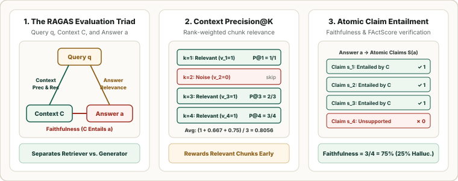

RAG & Grounding Metrics: The RAGAS Triad, Context Precision & Recall, Faithfulness, and FActScore
Evaluating only the final output string of a Retrieval-Augmented Generation (RAG) system conflates two orthogonal failures: a retriever miss (the needed facts were never fetched) and a generator hallucination (the LLM ignored or contradicted the fetched passages). This chapter derives the four metrics of the RAGAS Evaluation Triad, atomic FActScore for long-form factuality, and inline citation precision/recall.

1. The RAGAS Evaluation Triad: Retriever vs. Generator Diagnostics
Given a user query $q$, an ordered list of $K$ retrieved chunks $C = (c_1, \dots, c_K)$ with binary relevance indicators $v_k \in \{0, 1\}$, a generated answer $a$ decomposed into atomic claims $\mathcal{S}(a) = \{s_1, \dots, s_m\}$, and a reference ground-truth answer $y$ decomposed into claims $\mathcal{S}(y) = \{y_1, \dots, y_L\}$, RAGAS (Es et al., 2024) defines four complementary metrics:
| Metric | Pipeline Stage | Inputs Required | What Low Scores Diagnose |
|---|---|---|---|
| Context Precision@$K$ | Retriever / Reranker | $(q, C)$ | Relevant chunks are buried below noisy distractors in the prompt window ("lost in the middle"). |
| Context Recall | Retriever Coverage | $(C, y)$ | Chunking, embedding, or top-$K$ cutoff missed ground-truth facts needed to answer $q$. |
| Faithfulness | Generator Grounding | $(C, a)$ | Extrinsic hallucination: $1 - \operatorname{Faithfulness}$ is the fraction of generated claims not entailed by $C$. |
| Answer Relevance | Generator Focus | $(q, a)$ | The answer is grounded in $C$ but evasive, incomplete, or off-topic relative to $q$ (measured via $M$ synthetic reverse questions $\hat q_m$ generated from $a$). |
2. Long-Form Factuality: Atomic FActScore and Citation Grounding
Single-score truthfulness ratings fail on long-form generations (biographies, medical summaries) because a single paragraph typically mixes several true facts with one or two fabrications. FActScore (Min et al., 2023) splits a response $a$ into atomic facts $\mathcal{A}(a)$—short sentences each conveying exactly one piece of information—and verifies each against a trusted knowledge source $\mathcal{K}$ (such as Wikipedia), multiplied by a brevity penalty $\operatorname{LP}$ if the model outputs fewer than $\mu$ facts:
When a RAG generator emits explicit inline bracketed citations $C_j \subseteq C$ for each statement $s_j \in \mathcal{S}(a)$, ALCE (Gao et al., 2023) evaluates Citation Recall (the fraction of statements fully entailed by their cited passages $\mathbf{1}[C_j \models s_j]$) and Citation Precision (the fraction of cited passages $c \in C_j$ that are non-redundant, meaning $C_j \setminus \{c\} \not\models s_j$).
3. Worked Numerical Example: Diagnosing a 4-Chunk RAG Trace
Suppose a RAG system retrieves $K = 4$ chunks with relevance flags $v = [1, 0, 1, 1]$ for a query whose reference answer has $|\mathcal{S}(y)| = 4$ claims (of which $3$ appear in $C$), and the LLM generates an answer $a$ containing $|\mathcal{S}(a)| = 4$ atomic claims (of which $3$ are entailed by $C$ and $1$ is hallucinated):
| Metric | Step-by-Step Substitution | Score | Engineering Action |
|---|---|---|---|
| Context Precision@$4$ | Relevant ranks $k \in \{1, 3, 4\}$ have $\text{P@}1 = \frac{1}{1}, \text{P@}3 = \frac{2}{3}, \text{P@}4 = \frac{3}{4}$; average $= \frac{1 + 0.6667 + 0.75}{3}$ | $\mathbf{0.8056}$ | Chunk $c_2$ is a false positive; reranker can push $c_3, c_4$ above $c_2$. |
| Context Recall | $3$ of the $4$ ground-truth reference claims $\mathcal{S}(y)$ are entailed by $C$ | $\frac{3}{4} = \mathbf{0.7500}$ | Increase top-$K$ or use hybrid dense + BM25 retrieval to recover the 4th fact. |
| Faithfulness | $3$ of the $4$ generated claims $\mathcal{S}(a)$ are entailed by $C$ (Hallucination Rate $= 25\%$) | $\frac{3}{4} = \mathbf{0.7500}$ | Tighten system prompt grounding or apply NLI sentence filtering. |
| Answer Relevance | Cosine similarities between $\mathbf{e}_q$ and $M=3$ reverse questions $\hat q_m$: $(0.92, 0.88, 0.90)$ | $\mathbf{0.9000}$ | Answer directly addresses the user's intent. |
4. Reference Python Implementation
import math
from typing import Sequence
def rag_context_precision_at_k(rel_flags: Sequence[int]) -> float:
"""RAGAS Context Precision@K over binary chunk relevance flags v_1..v_K."""
total_rel = sum(rel_flags)
if total_rel == 0:
return 0.0
hits, score = 0, 0.0
for k, v in enumerate(rel_flags, start=1):
if v:
hits += 1
score += hits / k
return score / total_rel
def rag_claim_ratio(entailed_flags: Sequence[int]) -> float:
"""Computes Faithfulness (on answer claims) or Context Recall (on reference claims)."""
return sum(entailed_flags) / len(entailed_flags) if entailed_flags else 0.0
def factscore(entailed_flags: Sequence[int], min_facts_mu: int = 10) -> float:
"""Min et al. (2023) atomic FActScore with length penalty LP."""
n = len(entailed_flags)
if n == 0:
return 0.0
lp = 1.0 if n >= min_facts_mu else math.exp(1.0 - min_facts_mu / n)
return lp * (sum(entailed_flags) / n)
print("Context Precision@4 :", round(rag_context_precision_at_k([1, 0, 1, 1]), 4))
print("Context Recall :", round(rag_claim_ratio([1, 1, 1, 0]), 4))
print("Faithfulness :", round(rag_claim_ratio([1, 1, 1, 0]), 4))
print("FActScore (mu=4) :", round(factscore([1, 1, 1, 0], min_facts_mu=4), 4))Sources
Es et al., RAGAS: Automated Evaluation of Retrieval Augmented Generation (EACL, 2024); Min et al., FActScore: Fine-grained Atomic Evaluation of Factual Precision in Long Form Text Generation (EMNLP, 2023); Gao et al., Enabling Large Language Models to Generate Text with Citations — ALCE (EMNLP, 2023).